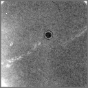

Usage Example - Operation: '
NEG A
'
Negate - Invert contrast of image & preserve average
Procedure used:
nega.spi
.OPERATION:
NEG A
; Invert contrast of image & preserve average
.INPUT FILE:
sav_pp
; File name (input)
.OUTPUT FILE:
nega
; File name (output)
INPUT
OUTPUT

sav_pp
nega